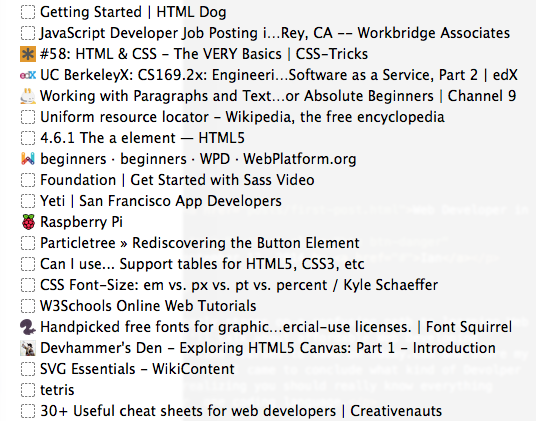

Contractor for the Web

This blog-post covers my early stages of an at first confusing yet productive path to learning how to be a Web Developer, learning how to write code, and learning modern responsive design. I'll talk about affordable Web Developer courses for absolute beginners and share my experiences along the way.
It started with a sarcastic titled page "So you want to be a web developer?" and I watched this very basic html tutorial "Hello World". I have built 37 Hello World webpages. Beginners get use to it, almost every teacher starts with Hello World.
<h1>Hello World!</h1>"html/css - still the fundamental tech for displaying webpages. but you never do it from scratch anymore unless you are a pure designer. you can use Bootstrap and foundation to get you 90% of the way if you do something on your own.. or hack up the css from a Wordpress template."
My goal was to find affordable Web Developer courses. I started with these basic slow rolling HTML, CSS, and Javascript classes. I did not make anything cool here, but that's not why I was there. I just wanted to understand the meanings of these languages and these courses were helpful and informative.
Online courses with Edx and Udemy
After I finished watching the Free tutorials I wanted more of a challenge. I was referred to Edx classes that teach Ruby on Rails for free.
"ruby on rails - rails seems to be losing momentum as well, but there are just so many places with it it'll be around for some time, but not on the same growth path."
However, after my beginner classes this seemed a bit too advanced so I opted for what I thought would be a better introduction to how things work at Edx. I enrolled in the Computer Science (CS50) course, which teaches you C programming language and compiling. This class, which I am still currently working on is not easy! If you are looking for quick access to the tools you need to become a web developer then I would not recommend this course unless you really feel like spending 6 months nerding out.
I had come to a screeching halt developing actual visual Web Pages while I was learning 1967 computer programming so I got aggressive to find some place where I could learn at a quicker pace. And then I found Udemy. Wasn’t sure at first, but there is actually some very well done classes taught by creative people that can show you how to build anything pertaining to the Web. New Stuff!
Best Web-Developer Courses
This is just my opinion, but I learned some nifty skills from this Web Dev Course with Rob Percival from across the pond. His course will get you moving fast and show you how to sell your skills. This is a good place to get started with bootstrap and wordpress. Other pluses is that you will receive free hosting when you sign up for the course, he teaches you how to get a domain name, and get your brand up and live for the world to see. You will also learn pretty advanced programming with Javascript and really start to understand the functionality of web-pages as well as the visual. List price: $199 | On sale for: $10
"javascript - seems like where it is right now. learn one language and build the entire stack. node.js is serverside javascript, and its been really popular. the client side js is really happening as well with angular, backbone, ember, etc.. "
document.getElementById("box").onclick=function()Here are some fun things I made using Javascript!
Another great course that really tapped in the depths of the amazing things you can do with bootstrap by far the leader in quick responsive programming was a html, css course by entrepreneur Ryan Bonhardt. He gets to the core of all the great visuals you can create with HTML and CSS. Excited about bootstrap? Then you will definitely like this course. It moves quick and you will build up a portfolio in no time at all. Well worth the price I paid and didn't take up a lot of my time. List price: $99 | On sale: $25
Overall I can say I made the biggest strides on these two courses and I feel that these courses didn’t skimp out on content. It wasn’t always easy I had to code a ton, but there were plenty of other peers like myself and everybody lends a hand if you get stuck on something.
What is the Angle?
I wonder why somebody would teach people like me just starting out how to do all these cool things. Impressive for someone who 6 months ago couldn’t code a simple html page. Why would they load the competition with slew of web developers heading out to freelancer.com? There must be some angle. Or are they just determined to teach the world how to code? The swork side of me wants to say it’s probably a little of both, these teachers get subscribers, and they get to feel good by teaching people these fun coding magic tricks. For what’s it’s worth affordable education has become real and I think it’s really great right now! I don’t feel exploited or being treated like a consumer and I hope it can stay that way.
"get ready for the internet of things, this is the next big thing, it replaces the current paradigm in 20 years, but the transition has been underway for awhile iOS app programming and AWS programing are transition technologies that will lead to whatevers next"
What's Next?
Mobile Development? Programming with Ruby and Python? UI design? I started this adventure 6 months ago and I am feeling confident that I am ready to work. My services are for sale. The advice that I have been told most often is to "BUILD SOMETHING!" And so I built this website.